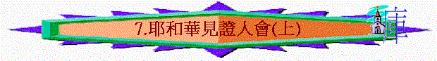
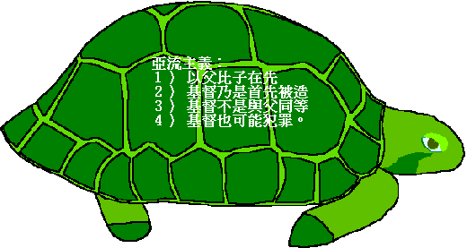
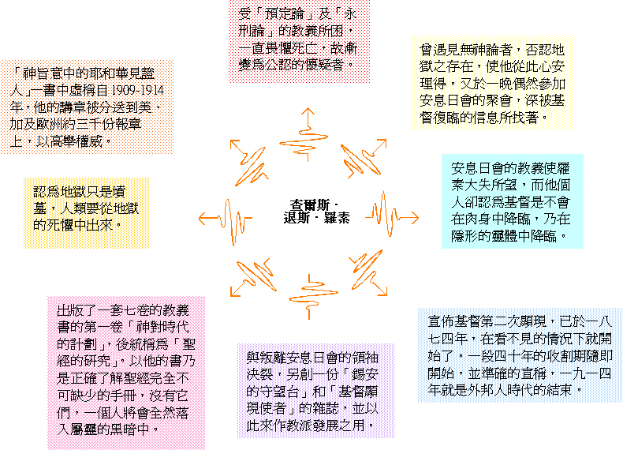
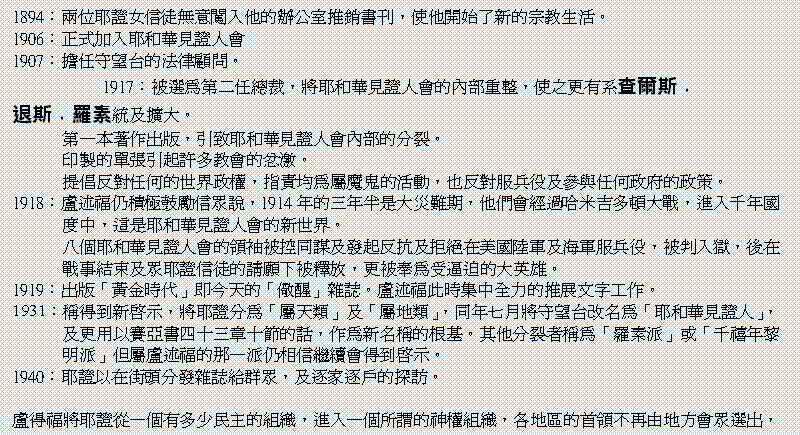
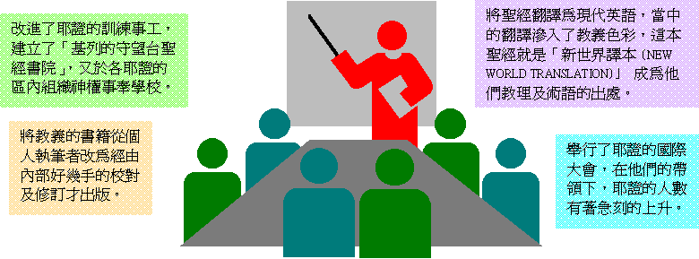

[ Home ] [ Up ] [ 1.偏差溯源 ] [ 2.大公教會(上) ] [ 3.大公教會(中) ] [ 4.大公教會(下) ] [ 5.摩門教(上) ] [ 6.摩門教(下) ] [ 7.耶和華見證人會(上) ] [ 8.耶和華見證會(下) ] [ 9.基督復臨安息日會(上) ] [ 10.基督復臨安息日會(下) ]
第七課：耶和華見證人會（上）
Ａ）古老的淵源：

Ｂ）近代的復甦
第一任總裁（創辦人）──查爾斯．退斯．羅素（CHARLES
TAZE RUSSELL）

２）第二任總裁──約瑟．法蘭基．盧述福

３）第三任總裁──拿單．荷馬．諾爾

[ Home ] [ Up ] [ 1.偏差溯源 ] [ 2.大公教會(上) ] [ 3.大公教會(中) ] [ 4.大公教會(下) ] [ 5.摩門教(上) ] [ 6.摩門教(下) ] [ 7.耶和華見證人會(上) ] [ 8.耶和華見證會(下) ] [ 9.基督復臨安息日會(上) ] [ 10.基督復臨安息日會(下) ]